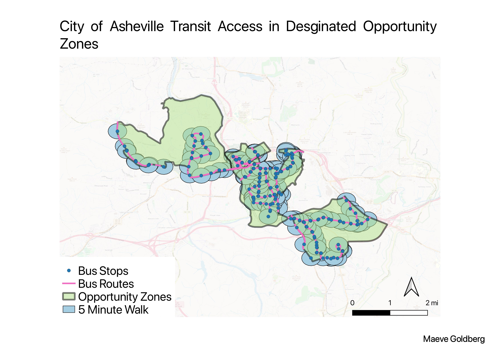

Homework 10: Geoprocessing Analysis
Maeve Goldberg
For this homework assignment I wanted to try and answer the question "how well does the Asheville city transit system serves economically disadvantged areas?" Asheville has created areas of the city based on census data called "opportunity zones", these zones are, "designed to drive long-term capital into low-income communities by using tax incentives to encourage private investment." For my map I used data from the city with the polygon of the zones, and then intersected the zones with the city bus route lines and bus stop points. Then I added a buffer of 0.25 miles around each bus stop, as an estimate of how far a person would typically walk in five mintures. By adding this buffer I hoped to be able to see where in the opportunity zones people could realistically travel without having a car and only using city transit options. The map shows that most of the areas are in fact accsesible, with a few exceptions as you get further from teh city center.

Data used for this project
City of Asheville Open Data Source Portal